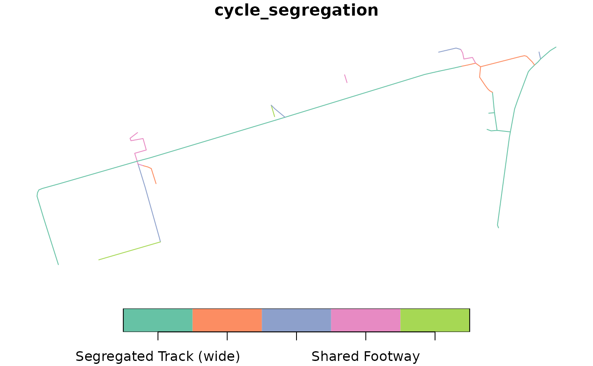

This function classifies OSM ways in by cycle infrastructure type levels for a given dataset.
Usage
classify_cycle_infrastructure(
osm,
min_distance = 9.9,
classification_type = "Scotland",
include_mixed_traffic = FALSE
)Arguments
- osm
The input dataset for which segregation levels need to be calculated.
- min_distance
The minimum distance to the road for a cycleway to be considered off-road.
- classification_type
The classification type to be used. Currently only "Scotland" is supported.
- include_mixed_traffic
Whether to include mixed traffic segments in the results.
Details
See wiki.openstreetmap.org/wiki/Key:cycleway and taginfo.openstreetmap.org/keys/cycleway#values for more information on cycleway values used to classify cycle infrastructure.
Currently, only the "Scotland" classification type is supported. See the Scottish Government's Cycling by Design for more information.
Examples
library(tmap)
tmap_mode("plot")
#> ℹ tmap mode set to "plot".
osm = osm_edinburgh
cycle_network = get_cycling_network(osm)
driving_network = get_driving_network(osm)
netd = distance_to_road(cycle_network, driving_network)
netc = classify_cycle_infrastructure(netd)
library(sf)
#> Linking to GEOS 3.12.1, GDAL 3.8.4, PROJ 9.4.0; sf_use_s2() is TRUE
plot(netc["cycle_segregation"])

plot(netc["distance_to_road"])
# Interactive map:
# tmap_mode("view")